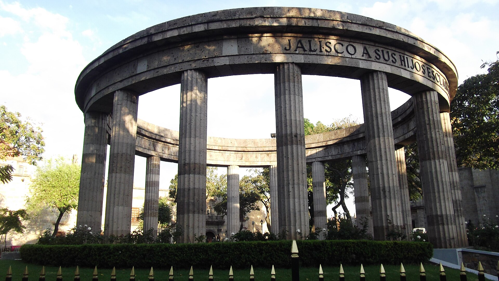
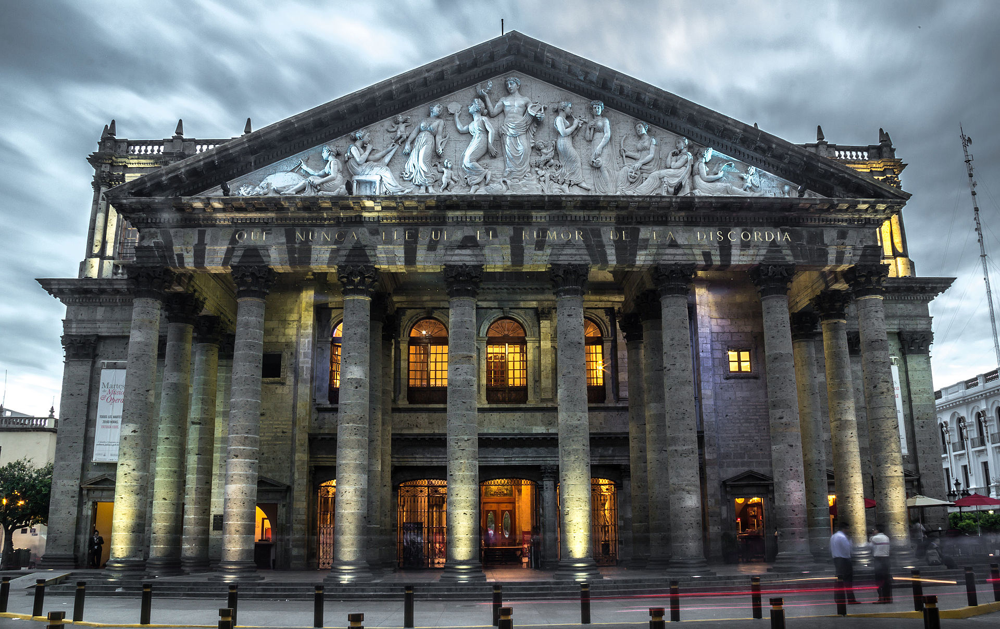

Guadalajara es una ciudad mexicana, capital del estado de Jalisco. Está ubicada en el occidente del país, en la zona geográfica conocida como valle de Atemajac. La ciudad está considerada como uno de los centros políticos, económicos, sociales, culturales y turísticos más importantes de México.12 Guadalajara es también conocida como «La Perla Tapatía», «La Perla de Occidente», «La Ciudad de las Rosas», «Guanatos» y «El Valle de Silicio de México»
El nombre proviene del árabe, que significa "río de piedras", "río que corre entre piedras" o "valle de las fortalezas". La ciudad recibió su nombre de Nuño Beltrán de Guzmán, en honor a la ciudad española donde nació. Guadalajara fue fundada en cuatro ocasiones distintas, estableciéndose de forma definitiva por Cristóbal de oñate, Beatriz Hernández y algunas familias más el 14 de febrero de 1542, sobre el margen del río San Juan de Dios.
El municipio limita al norte con Ixtlahuacán del Río, al este con Zapotlanejo y Tonalá, al sur con Tlaquepaque y al oeste con Zapopan y cuenta con una población de 1 385 629 habitantes, sin embargo, su área conurbada alcanza una población estimada de 5 179 874 habitantes, siendo la novena área urbana más poblada de América Latina, sólo después de la Ciudad de México, São Paulo, Buenos Aires, Río de Janeiro, Lima, Bogotá y Santiago, así como la sexta de América del Norte después de la Ciudad de México, Nueva York, Los Ángeles, Chicago y Toronto.
Durante el Virreinato de la Nueva España Guadalajara se convirtió oficialmente en la capital de la Nueva Galicia, gozando de mayor autonomía. En la Independencia de México desempeñó un papel crucial, ya que el 6 de diciembre de 1810 Miguel Hidalgo abolió la esclavitud en la ciudad. Posteriormente, en la Guerra de Reforma, Benito Juárez trasladó su gobierno a Guadalajara en 1858 debido a las disputas entre liberales y conservadores. Durante la Revolución Mexicana las implicaciones en la región fueron más sociales que militares, destacando la entrada del Ejército Constitucionalista el 8 de julio de 1914. Durante la segunda mitad del Siglo xx la ciudad vivió una etapa de estabilidad social y de crecimiento comercial e industrial.
Debido a su influencia y alcance internacional fue catalogada como ciudad global en 2016, y como una de las 90 ciudades más productivas del mundo, con una puntuación de 56.3.1516 A nivel nacional se constituye como el tercer núcleo económico del país, con un PIB de 124,047 millones de dólares. La economía de la ciudad se basa en el comercio, los servicios e industria, destacando la industria tecnológica debido al gran número de firmas internacionales que tienen sede en la ciudad, por lo que se le conoce como el Silicon Valley de México.
Es considerada un gran polo cultural y referente de México en el extranjero, ya que Jalisco es cuna del mariachi, la charrería y el tequila. Guadalajara cuenta con eventos anuales de gran prestigio, como el Festival Internacional de Cine de Guadalajara y la Feria Internacional del Libro de Guadalajara, la más importante en el mundo de habla hispana y la segunda más grande del mundo después de Fráncfort, Alemania.
Guadalajara fue sede de los Juegos Panamericanos de 2011 así como una de las sedes en el Mundial de Fútbol de México de 1970 y 1986. Asimismo, ha sido nombrada Capital Americana de la Cultura en 2005, Capital Mundial del Deporte en 2020 y Capital Mundial del Libro por la UNESCO en 2022. El Hospicio Cabañas, enclavado en el Centro Histórico es Patrimonio de la Humanidad por la UNESCO desde 1997.181920Según la revista Time, Guadalajara es de los mejores lugares en el mundo del 2023.